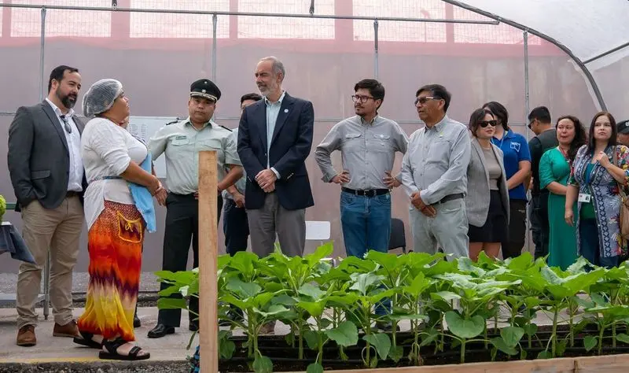
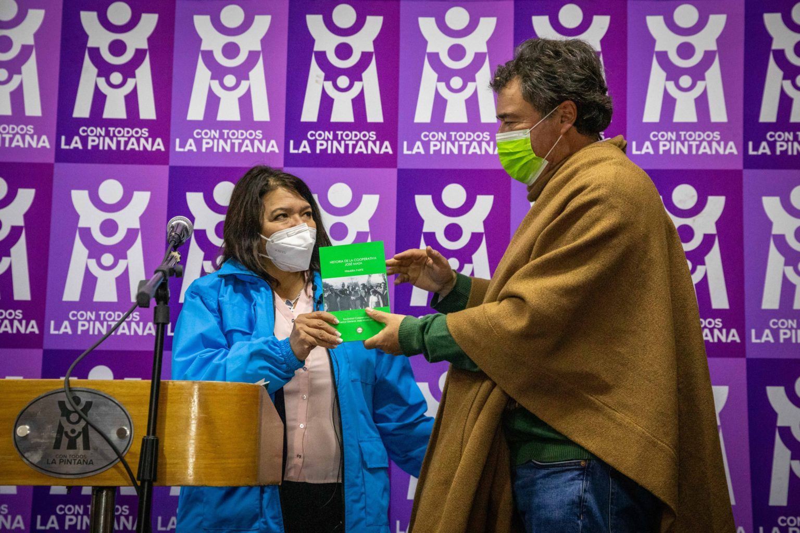

NOTICIAS IMPORTANTES
Proyecto Vida Rural UC: instalan huertos familiares en seis comunas capitalinas
La fundación dio inicio a su proyecto Huertas Familiares Comunitarias orientado a las comunas de Pudahuel, Estación Central, Macul, La Granja, Cerro Navia, La Florida y Santiago.

Autoridades locales visitaron centro hidropónico del CCP Iquique
Iniciativa enmarcada en un convenio entre SQM Yodo Nutrición Vegetal y Gendarmería de Chile busca entregar conocimientos y preparar a las internas para su reinserción social.

Ministerio de Agricultura impulsa Huertos Urbanos en la Región Metropolitana
Mejorar el acceso a alimentos, generar una mayor eficiencia de los espacios en las ciudades, además de apoyar las condiciones económicas de productores y consumidores, son algunos de los beneficios de la agricultura urbana
